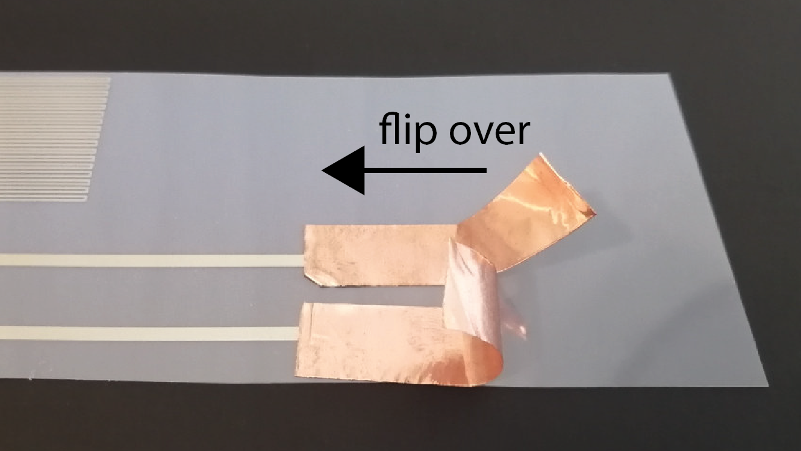
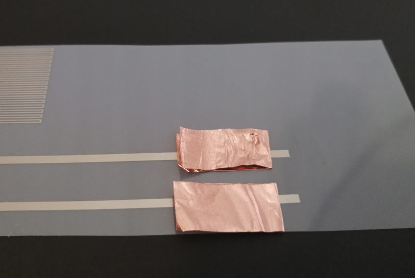
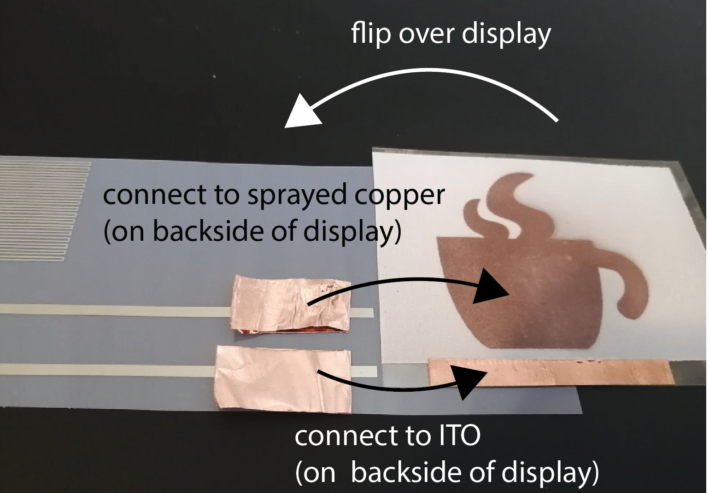

6.810 Engineering Interactive Technologies (fall 2021)
Lab 8: Mug Assembly & Display Control Using Temperature
In this lab, we will assemble the mug, i.e. attach your inkjet printed circuit to it. We will then write code to measure the temperature of the mug by reading the overall resistance from the temperature sensor. We will then adjust our display code to blink the display when the temperature is very high to warn the user, and otherwise we will just set the display brightness according to the current tempreature of the liquid inside.don't forget to bring your EL display

Steps:
- Attach Sprayed EL Display to the Circuit
- Attach Circuit to the Mug
- Solder on Jumper Wires for Breadboarding
- Cover Circuit with Tape to Protect from Moisture & Touch
- XXXX
- XXXX
- XXXX
- XXXX
Deliverables
At the end of the lab, upload to your student google drive:- 2-3 photos (.jpg or .png) from different angles of your assembled mug
- the Arduino code (.ino) for reading the temperature and controlling your display
- a short video (.mov or .mp4, max. 1 minute) showing how your display turned off at room temperature and starts blinking after pouring in boiling hot water in it.
(1) Attach Sprayed EL Display to the Circuit
Once you have printed your circuit and verified that the temperature sensor is having the right resistance, you are ready to attach your EL display to it.Attach Copper Tape to Circuit for EL Display Connections: Take a roll of copper tape and cut of two 6cm long pieces. Glue one half of each copper stripe on the two wires that lead to your display and bend the other half around such that the adhesive side faces upwards. Make sure that the two copper stripes don't connect to each other and have a save distance of at least 1cm.
label 1cm distance in image
 
Attach your Display to Copper Tape: Next, stick your display onto the sticky area of the bend-over copper stripes. Make sure that one copper strip connects only to the ITO and the other copper strip only connects to the sprayed copper layer.


Test Display Connection: Let's test if the connection between the display and the printed wires is working. Take your battery and inverter circuit and connect it to the two connector pads on the left hand side of the circuit. If you don't remember how to do this, look back at lab 6. Remember: do not touch the display or any part of the circuit while the battery is in use and the inverter is on. You should see that the display lights up.

Tape Down Edges of Display with Transparent Tape: Once, you verified that everything works, you can tape the display on its edges onto the circuit sheet using some transparent scotch tape. Apply a stripe of tape on the left and the right edge of your display.


(2) Attach Circuit to the Mug
Now that your EL display and temperature sensor are assembled together, you are ready to attach the entire circuit to the mug.Attach Double Sided Tape to Mug: We will use double sided tape to attach the entire circuit to the mug. Cut off a tape strip the length of your circuit design (17cm) and attach it across the surface of the mug. Next, remove the protective foil from the tape to expose the other adhesive side.


Attach Circuit onto Double Sided Tape: Next, take your printed circuit and glue it onto your mug.


(3) Solder on Jumper Wires for Breadboarding
Next, we want to solder jumper wires to the connector pads, which we can then use to connect to a breadboard and our microcontroller. Since the silver connector pads are not suitable for soldering, we instead solder the jumper wires onto little piece of copper tape and then attach those to the silver connector pads.Cut of One Copper Tape Strips for each Connector Pad: First cut of four copper strips, i.e. one for each of the four silver connector pads. The copper stripes should be about 3cm long, which is the size of your printed silver pads.
Solder Jumper Wire onto Copper Tape Strips: Take a soldering iron and apply a drop of solder on one of the copper strips. Next, take a short jumper wire, hold it over the solder drop, and press it down with the solder iron to melt it into the solder until it is well connected. Repeat this for all 4 jumper wires.
Attach Copper Tape/Jumper Wires to Connector Pads: Next, carefully attach the copper stripes onto your mug's connector pads.
Use Male-to-Female Jumper Wires to Extend Wires: To extend the wires and make them longer, you can connect male-to-female jumper wires to the four dangling wires.

(4) Cover Circuit with Tape to Protect from Moisture & Touch
The last step you need to do is to protect the mug from moisture and touch. This is especially important since we want to fill hot and cold water into it and some water may spill over (try to avoid it). Also, we want to protect the circuit from constant touching, which may happen with a mug. To protect the circuit, we will use clear tape to cover all the electronics.Apply Transparent Tape Over Circuit: Cut off a 19cm long stripe of our extra wide 3inch transparent tape. Carefully apply the tape onto the entire circuit. If you make a mistake here, do not pull back the tape, it will destroy the silver circuit. You need to just continue rolling the tape over the circuit even if it will not be perfect. Therefore, be extra careful.
it would be really good to have better images here

(5) Connecting to the Microcontroller and Building the Circuit
Controlling this mug interface requires 2 parts.
- a circuit to control the EL display. You have completed this circuit already in lab 3 and will will use it in this lab.
- a circuit to read the resistance of your printed temperature sensor. We will do this now.
Building the temperature sensor circuit
Remember that to measure the temperature of the liquid in the mug, we need to measure the changes in resistance of the silver trace that makes up our temperature sensor.
So how can we measure resistance on the ESP?
Unfortunately, we can't. The ESP can only measure voltage but not resistance.
However, there is a way to use changes in voltage to determine resistance. A circuit that allows us to do this is called a voltage divider. A schematic of a voltage divider looks like this:

It consists of one known resistor (R1) and one unknown resistor (R2) that we want to measure. In our case, the unknown resistor R2 is our temperature sensor. For the known resistor R1, we can simply pick one but it's a good idea to pick something that matches your other resistor R2, i.e. we will use 1kOhm.
Vin is the 3.3V supply voltage from the ESP32.
Vout is a voltage than will change when the resistance of our temperature sensor (R2) changes.
We can compute VOut using the following formula:
Vout = (R2*Vin)/(R1+R2)
If we use a 1kOhm resistor for R1 and we connect the temperature sensor as R2, then we can solve the equation for R2 to determine the change in resistance, which ultimately allows us to determine the current temperature of the mug.
To get started with this, build the voltage divider on a breadboard and connect your temperature sensor on the mug to this circuit.
Building the EL display control circuit
If you finished all task from lab3, you already have this circuit.
All that's left to do is to connect your EL display control cicuit to the corresponding wires on the mug.
(5) Code for Reading Mug's Current Temperature and Adjusting Display
Now that everything is wired up, you are ready to write the code for determining the temperature and adjusting the display brightness accordingly.
The display should be turned off when the mug is cold. It should start blinking at temperatures above >70C to help users avoid getting burned.
Code for Reading Voltage from Voltage Divider Circuit
Use analogRead() to read the incoming voltage value from your voltage divider and write it to the Serial monitor. analogRead() returns the voltage value between 0V and 3.3V and maps it to an output range of 0 - 4095. What this means is that if you read a value of 2047 (4095/2), your voltage is around 1.65V (3.3V/2). If you see the voltage readings in the Serial monitor, move to the next stpe.
Converting Voltage To Resistance Values
Now, it's time to apply the voltage divider formula from above.
Use it to compute the resistance of your temperature sensor R2 and plot the values.
Smoothing the Signal with a Box Filter
You'll notice that the resistance values are fluctuating a lot.
This is due to the limited precision of the ESP32 and environmental electric noise that slightly changes the read in voltage values.
Recall from the lecture 'Sensing: Touch', that we introduced a filtering technique to smooth out such noise.
It's called a box filter and it works by saving an array of sensor values (the box) of a specific width (e.g., 300 values) and computing the mean of this box.
As new sensing values get read in through analogRead(), the box moves forward by one value, i.e. the oldest element in the array gets replaced by the new value and you need to recompute the mean.
Implement a box filter that smoothens out the values from analogRead().
Use a box width of 300 values.
Once you have completed the filter, your results should look like this:
You see that the filter first collects 300 values and the mean is increasing with every new value. When the box is full, we can have a stable resistance value. Below we see a zoomed in graph of the filtered values. The fluctuation is reduced to just 20Ohm (instead of 300Ohm without filtering, which is 15x more noisy!).
Measuring temperature with resistance increase
Now, it's time to conduct an experimen.
How much does the resistance changes as the temperature of a liquid inside the mug increases?
First, note down your current mean resistance at room temperature.
Get some water to boil to 100C and pour it into the mug while you continue to plot the resistance values with the serial plotter.
You should notice that the values start increasing while the mug is heating up.
Once you reached a stable value, note it down as well.
The value increase should be around 4%.
Connecting Temperature/Resistance Increase to Display Behavior
Next, use your temperature sensor values to set different states for your display.
While the mug is at room temperature or below around 60C, it should be turned off.
The display should blink if the mug is really hot and ready to drink (i.e., the temperature when you poured in the boiling water, around 80C (the boiling water gets a bit colder than 100C when you pour it into a cold mug).
Your final design should look like this:
Deliverables Lab 4 (due Wednesday, Oct. 7, 2020, 11.59pm)
At the end of Lab 4, upload to your student google drive:- the Processing code (.pde) to generate a temperature sensor
- the Arduino code (.ino) for controlling your display and reading the temperature
- 2-3 photos (.jpg or .png) from different angles of your mug
- a short video (.mov or .mp4, max. 1 minute) showing how your display turned off at room temperature and starts blinking after pouring in boiling hot water in it.